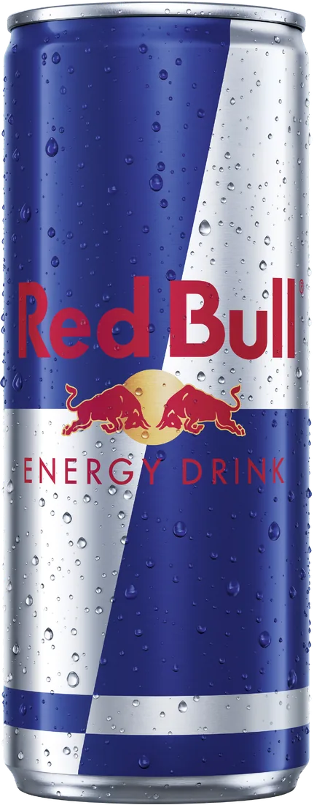
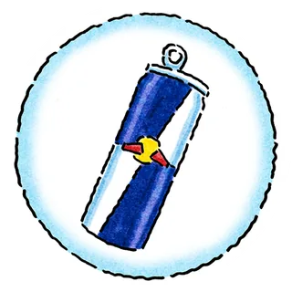
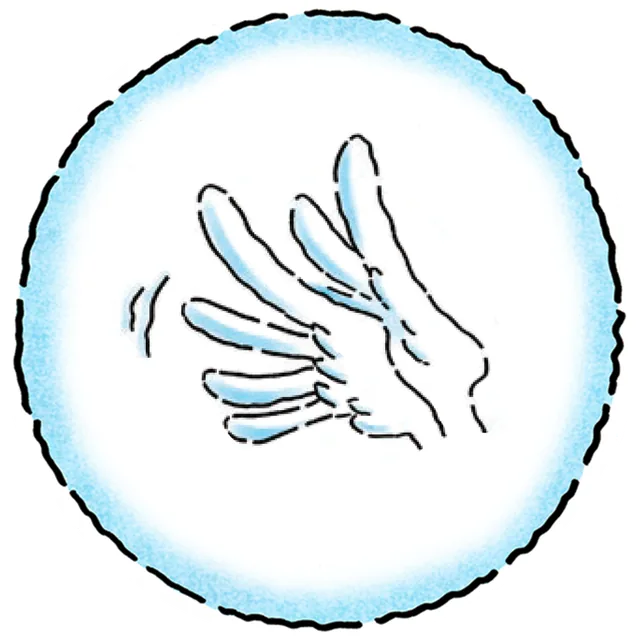
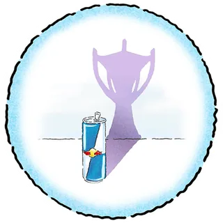

Red Bull · Microativação
CRONÔMETRO INVISÍVEL
Sorteamos um tempo. Você para o cronômetro nele.
Só que o cronômetro não aparece.

Acertou? Leva uma Red Bull.TENTATIVA 1 DE 3
SEU ALVO
SEGUNDOS
ALVO s
SEU TEMPO


MELHORES DO DIA